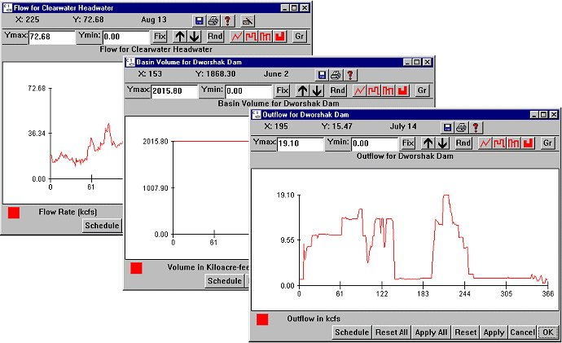

Reservoirs: Storage Reservoir Inputs
Selecting a Reservoir from Flow Reservoirs opens two windows, Basin Volume and Outflow, for the selected storage reservoir. Flow out of storage reservoirs is set by specifying either daily outflow (in kcfs) in the Outflow window or daily volume of the storage reservoir in kilo-acre feet (kaf) in the Basin Volume window. The Basin Volume window takes into account the amount lost to outflow and the amount added by inflow and runoff. These are Editable Graph windows.
Reservoirs opens two windows, Basin Volume and Outflow, for the selected storage reservoir. Flow out of storage reservoirs is set by specifying either daily outflow (in kcfs) in the Outflow window or daily volume of the storage reservoir in kilo-acre feet (kaf) in the Basin Volume window. The Basin Volume window takes into account the amount lost to outflow and the amount added by inflow and runoff. These are Editable Graph windows.
In Scenario Mode, flows from storage reservoirs such as Dworshak, Chief Joseph, and Hells Canyon are controlled through these two windows and interact with the headwater flow (accessed through the Headwaters submenu). The input flow (output flow from the headwater), outflow, and volume values set by these windows are constrained as follows:
- With full reservoir, outflow equals input flow
- With an empty reservoir (minimum reservoir volume), output is less than or equal to input flow.
Adjusting storage reservoir flows is an interactive process. Outflow and volume are modified according to the above constraints given the input flow. When either the Outflow or the Basin Volume are adjusted with the mouse buttons, both windows are updated immediately when the mouse button is released. These windows allow you to examine the effect of adding new storage to the system, applying a water budget using existing storage, or pulsing outflow from storage facilities. To update the effect of a new input flow on storage reservoir volume, run the Scenario Mode of COMPASS. The three windows -- Basin Volume, Outflow, and Flow -- will be updated according to the constraints.

Basin Volume, Outflow and Input Flow windows for Dworshak to control storage reservoir flows